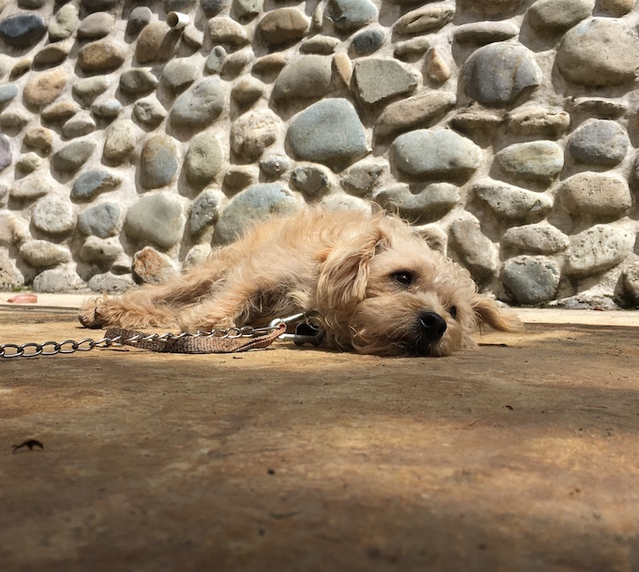
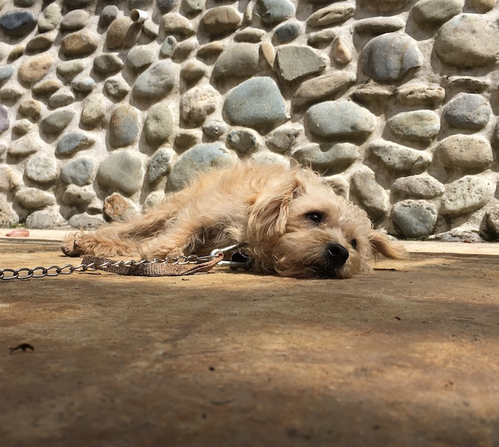
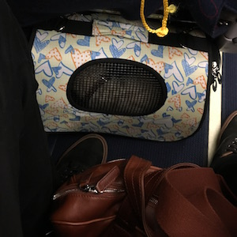

I was born in the crook of a granite boulder, a few miles south of the city of Cuenca high in the mountains of Ecuador.
My mother named me Juan Alberto Dominguez Garcia Diaz Rodrigo. She weaned me early and I never knew my father.
Alone and aware of my stature, I hid under the mountain brush and in the shadows. I ate grass and drank from the afternoon showers.
One evening I was caught in a torrential downpour. I was terrified. Soaking wet, I walked in the dark, shivering, searching for a place to hide from the rain.
I met a pack of hairless animals that lived in above ground burrows. They took me in and fed me more food than I've ever had in my life.
I was gaunt; my coat was flea ridden and matted. I was brought to a medicine man who took off all my hair, wetted me in a small waterfall, and poked me with shiny sticks.
They put a vine around my neck and tried to pull me down a path. Eventually they just picked me up and carried me.
Soon, I was in the belly of a large eagle. We spent a lot of time there. The eagle made my new pack leader kinda grumpy, but I just slept1.
Very early in the morning we arrived at "The United States".
There is a lot I like about my new life here. My pack leader got me a bed and some dolls to play with, and he gives me a lot of food. It's way better than grass and I don't have to do anything to get it.
He squeezes me and smacks his lips on my head.
We go out to meet other dogs.
I thought I would die during the rain storm but instead it brought me to a new life full of warmth, love, and happiness.
I am Poncho.
About the Author:

Sleeping. ↩